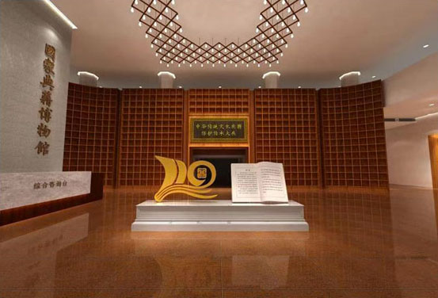
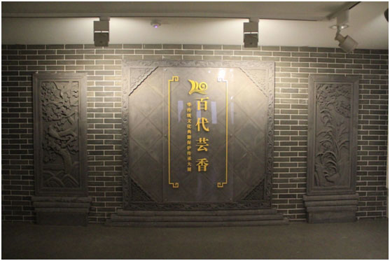

“中华传统文化典籍保护传承大展”在国家图书馆开展
展览时间：2019年9月7日起
展览地点：国家典籍博物馆第一、二、三、四展厅
为庆祝中华人民共和国成立70周年，9月7日，由文化和旅游部、国家文物局主办，国家图书馆（国家古籍保护中心、国家典籍博物馆）承办，全国高等院校古籍整理研究工作委员会及各参展单位协办的“中华传统文化典籍保护传承大展”在国家典籍博物馆开展。
此次国家图书馆举办“中华传统文化典籍保护传承大展”，以全面阐发中华传统文化典籍精髓，充分展示新中国成立以来各相关单位在中华典籍传承方面所付出的努力和成果为宗旨，通过精炼深刻的图文内容，珍贵罕见的古籍善本，丰富新鲜的科技互动手段，为观众奉献一场“让古籍活起来”的精神文化盛宴。
本次展览以深入学习贯彻习近平总书记关于传承和弘扬中华优秀传统文化重要论述精神为指引，着重展示新中国成立以来，在党和政府的领导下，国内各级图书馆、博物馆等单位联合社会各界力量，为中华文化典籍的保护传承事业所做出的重要成果，以及典籍在弘扬中华优秀传统文化、为人类文明的传承和传播作出的重要贡献。
大展汇集了全国20多个省40余家公藏单位、30余位私人藏书家的珍贵藏品330余种。同时运用了数字虚拟沙盘演示、全息视屏演示、沉浸式数字场景、微信导览等多种手段，力图用通俗的语言、灵活多样的形式、现代科技的手段将中华民族跨越时空、超越国度、富有永恒魅力的文化基因和民族记忆传递给每一位观众。展览联动国家典籍博物馆文津厅、两侧通道以及第一至第四展厅进行展示，每个展厅都独具特色。踏入国家典籍博物馆大门即进入序厅，映入眼帘的是此次大展的标识及前言，标识以展开的书叶展示“110周年”的字样，灵动优美，其后矗立“顶天立地”巨型书架。序厅中还特别设置了朗读亭，观众可以在亭中朗读珍贵典籍，然后将录音通过微信分享出去。从序厅向两侧连廊走去，仿若走进时光隧道，通过“中华古籍长河”及“国图百十年大事记”时间线，将走进大展四个专题展厅。

第一展厅主题为“国宝吉光”。展厅入口以巨型环幕的形式，循环播放《中华典籍讲述中国故事》宣传视频，将中华典籍的演变历史、文献宝库国家图书馆、历代藏书家爱书护书传承典籍的事迹以视频的形式展示出来，给观众以震撼的视觉冲击。展览分为“厚德载物 与时俱进”“鉴古知今 汲取智慧”“学说纷呈 匠心天工”“华章焕彩 翰墨流芳”四个主题单元，还有独立单元“典籍总汇 文化渊薮”和“激活经典 熔古铸今”专题，以经史子集四大部类为线索，展现历朝历代在哲学、思想、科技、文学等各个方面的伟大成就。展品汇集国内20多家图书馆、博物馆藏珍贵文献100余种，大部分展出文献为入选《国家珍贵古籍名录》的珍品，包括已出版的18部《中华传统文化百部经典》原本；海内孤本宋淳熙八年（1181）刻本《扬子法言》；还有来自湖南省考古研究所的里耶秦简首次在国家典籍博物馆展出，这也是目前唯一一份秦朝政府档案；文津阁《四库全书》、文源阁《四库全书》、文澜阁《四库全书》及河南省图书馆藏文渊阁四库全书删余稿《明文海》等同台展出。同时为纪念司马光、曾巩诞辰一千年，展厅内将展出司马光《资治通鉴》残稿、元大德八年（1304）丁思敬刻本《元丰类稿》。
第二展厅主题为“百代芸香”，会衔处设计成为灰色“影壁”，配以传统吉祥纹样砖雕，中厅则设计还原了晚清四大藏书楼之一的铁琴铜剑楼造型，辅以雅致的文人书房场景布局，增强观众的沉浸式观展体验。通过“酉山事业”“书田寻踪”“社会参与 共护国宝”三部分，致敬那些为保护和传承我国古代典籍文化做出贡献的历代藏书家，展示他们爱书、护书、捐书的爱国精神，以及新中国成立后，在政府主导下全民共同参与古籍保护的成果，普及藏书文化与古籍保护知识，展示绵延不绝、传承有序的中华文化。展览汇集了傅增湘、郑振铎、周叔弢等藏书家捐赠国家图书馆的珍贵古籍，以及当代民间藏书家种类多样的珍品共计100余种，其中馆藏30种，其他70余种展品分属30余位民间藏家。展出国图藏珍贵宋刻14件，如现存围棋著作的最早印本、铁琴铜剑楼旧藏宋刻本《忘忧清乐集》，3件海内孤本宋绍熙三年（1192）黄唐两浙东路茶盐司刻宋元递修本《礼记正义》、南宋宁宗时重刻本《荀子》、宋嘉定六年（1213）淮东仓司刻本《注东坡先生诗》都在这个展厅齐亮相；民间藏品种类丰富，涵盖史书、历书、医书、档案、信札、拓本、佛经、琴谱、棋谱、画谱、雕版以及少数民族文字古籍等，并以颇具艺术性、观赏性的版画居多，反映了民间藏书家在保存保护善本古籍、延续中华文脉作出的重要贡献。此外，为本次大展特别拍摄制作的古籍保护纪录影片将在此展厅的独立视频放映区播放。